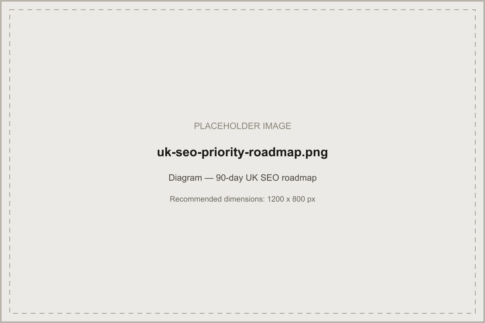

A practical growth framework covering every part of UK SEO — with links through to Acendia's deeper guides on each one, so this hub stays useful without repeating them.
In short: SEO for UK businesses works through the same core mechanics as anywhere — crawlability, keyword-intent matching, content quality, authority, and (for many businesses) local signals — but UK-specific keyword phrasing, a competitive and mature market, and a distinct citation ecosystem mean generic or US-built SEO advice rarely transfers cleanly. This guide is a hub: a practical overview of every part of the picture, with links through to Acendia's deeper guides on each one.
Google ranks pages on the same fundamentals everywhere — crawlability, relevance to the query, content quality, and authority. What changes for UK businesses is the competitive context: a mature, information-dense market where quick wins live in specific, lower-competition terms rather than national head-terms on day one. See our full guide to ranking higher on Google UK for the detailed, step-by-step version of this framework.
UK searchers use their own phrasing and spelling conventions, and content built for a generic or US audience won't automatically transfer. Research the specific terms UK customers actually use, and study what's currently ranking to understand what a genuinely better answer would need to cover.
If any part of your business depends on customers finding you locally, Google Business Profile and Map Pack visibility become central. Our local SEO UK guide covers the full setup and maintenance process, and our local SEO strategy guide covers the complete framework in depth.
Service-area businesses without a public storefront should configure Google Business Profile accordingly — hide the address, define service areas precisely, and avoid overly broad coverage that dilutes relevance for every individual area within it.
For multi-location or wide-service-area UK businesses, build a genuinely distinct page per city or town that carries real demand, rather than one generic page or a templated set with the place name changed. See our London, Manchester, and Birmingham pages for examples of this approach in practice.
A clear hierarchy — homepage, core service pages, location pages where relevant, and a resource hub — makes it easier for both Google and visitors to find what they need, and easier to build internal links that reinforce your most important pages.
None of the content or authority work below matters if Google can't crawl, render, and index pages cleanly. Confirm sitemaps, canonicals, and indexation are correct — our complete technical SEO guide covers this in full.
Plan content around real UK search intent and funnel stage — informational content for early research, comparison content for evaluation, and clear commercial pages for ready-to-enquire visitors — rather than publishing broadly without a clear map of what each page is meant to achieve.
Link supporting content up to relevant hub and service pages, and link service pages to the specific guides that answer a reader's follow-up questions. A page with no internal links pointing to it is much harder for both Google and real visitors to find.
Authority — backlinks and mentions from credible UK sources — is arguably the UK market's defining battleground for competitive terms. Genuinely useful, linkable content and real digital PR outreach outperform bulk directory submissions or low-relevance link building, both in results and in risk.
For location-dependent businesses, an actively maintained Google Business Profile is often the single highest-leverage asset available — category accuracy, complete attributes, and regular activity all factor directly into local ranking.
A steady, ongoing flow of reviews — supported by a consistent request process and a genuine response to every review — builds trust with both Google and prospective customers more effectively than an occasional burst of activity.
A ranking that doesn't convert into an enquiry is only half the job. Make the next step unmistakably clear once a visitor lands on a page — a visible way to call, message, or enquire, with minimal friction.
Google Search Console's Coverage and Performance reports are the most reliable way to confirm what's actually indexed and ranking, rather than relying on assumption. Review this data on a regular monthly cadence, not only when something feels off.
Lower-competition local and long-tail terms can move within a few months; competitive national head-terms typically take considerably longer. Be cautious of any agency or guide promising a fixed number of weeks — genuine, sustainable movement depends on too many variables for a guarantee to be credible.
| Internal execution | Agency | |
|---|---|---|
| Best suited to | Businesses with existing SEO expertise and capacity | Businesses needing consistent execution across technical, content, local, and reporting simultaneously |
| Speed to full coverage | Depends on available internal time | Faster where a team already has established processes |
| Ongoing cost pattern | Internal time cost, not a direct invoice | Ongoing service cost — see our UK SEO pricing guide |
Neither option is inherently better — it's a genuine trade-off against available time, expertise, and how much needs to run in parallel. See our SEO for UK small businesses guide if resource constraints are the deciding factor, or our SEO agency UK page if you'd rather this were managed for you.

Start with the technical foundation — confirm your site is crawlable and indexable — then move to UK-specific keyword research, and only then to content, local SEO, and authority-building. Working in this order avoids building content and links on top of a site Google can't properly crawl in the first place.
The mechanics of search are the same everywhere, but UK searchers use their own phrasing, spelling conventions, and regional terminology, and the UK's competitive landscape and citation ecosystem are distinct from other English-speaking markets. Content and technical work built for a generic or US audience often needs real adaptation, not just a find-and-replace of spelling.
It depends on available time, in-house expertise, and how much of the work — technical, content, local, and reporting — needs to run simultaneously. See the section above for the trade-offs.
It depends heavily on competition and starting point. Lower-competition local and long-tail terms can move within a few months; competitive national terms typically take considerably longer. Be cautious of any fixed-timeframe guarantee — genuine movement depends on too many variables for one to be credible.
Get a free audit and a prioritised roadmap covering technical, content, local, and authority — not just one piece of it.
Request a Free UK SEO Audit →The detailed, step-by-step ranking framework.

The complete local SEO framework in depth.
Real, sourced pricing ranges and how to compare proposals.

What to prioritise with limited time and budget.
Written and reviewed by the Acendia International Editorial Team, part of Acendia International, an SEO agency working with businesses across the United Kingdom. See our editorial approach for how we research, write, and review our guides. Published 4 August 2026. Last updated 4 August 2026.
Book a free strategy call and get a prioritised roadmap for your business.